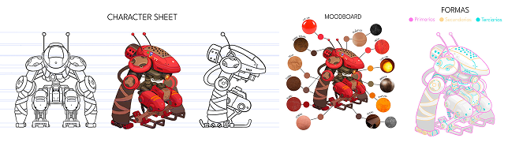
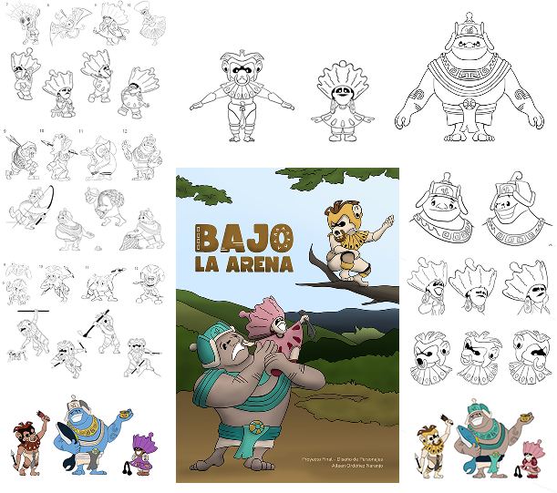

Proyecto de modelado y texturizado 3D realizado en Maya y Substance Painter a partir de un concept art de James McDonald. Incluye turnaround, preproducción y definición de materiales para lograr coherencia visual y volumen.


"Bajo la Arena"
Proyecto de diseño de personajes desde cero a partir del brief: “golems jama-coaque”. El proceso de creación incluye los moodboards y la construcción psicológica para cada personaje con el fin de desarrollar y refinar a Lola, Teo y Eloy.